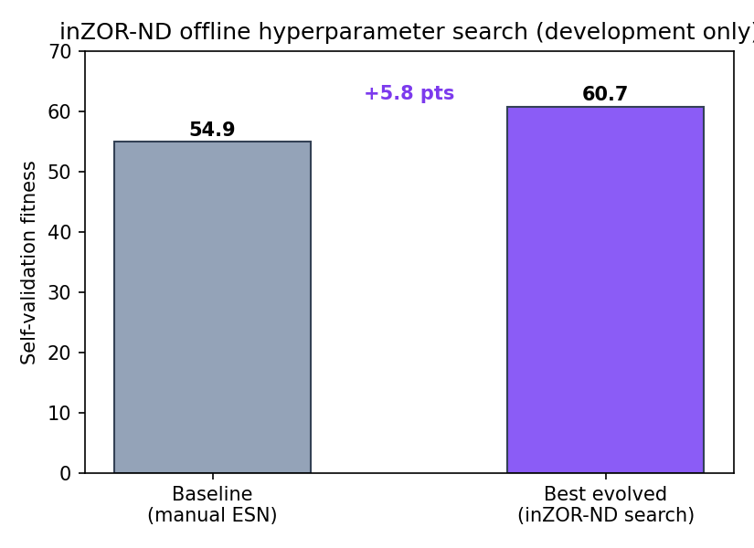
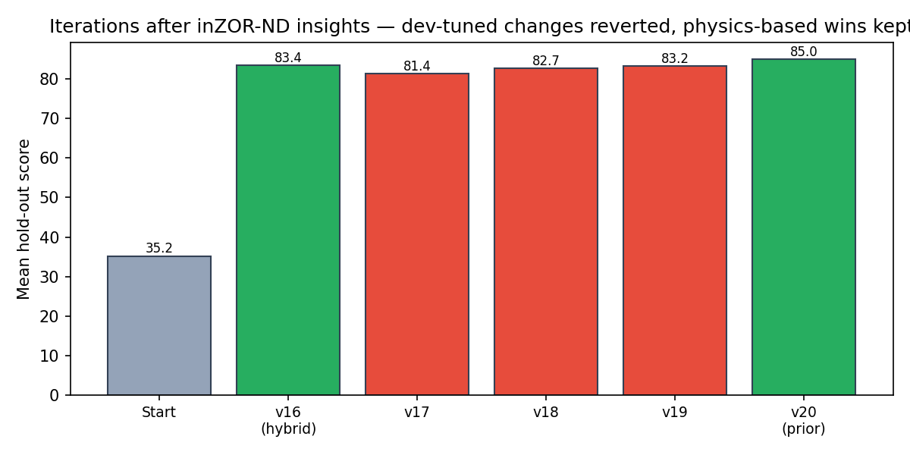
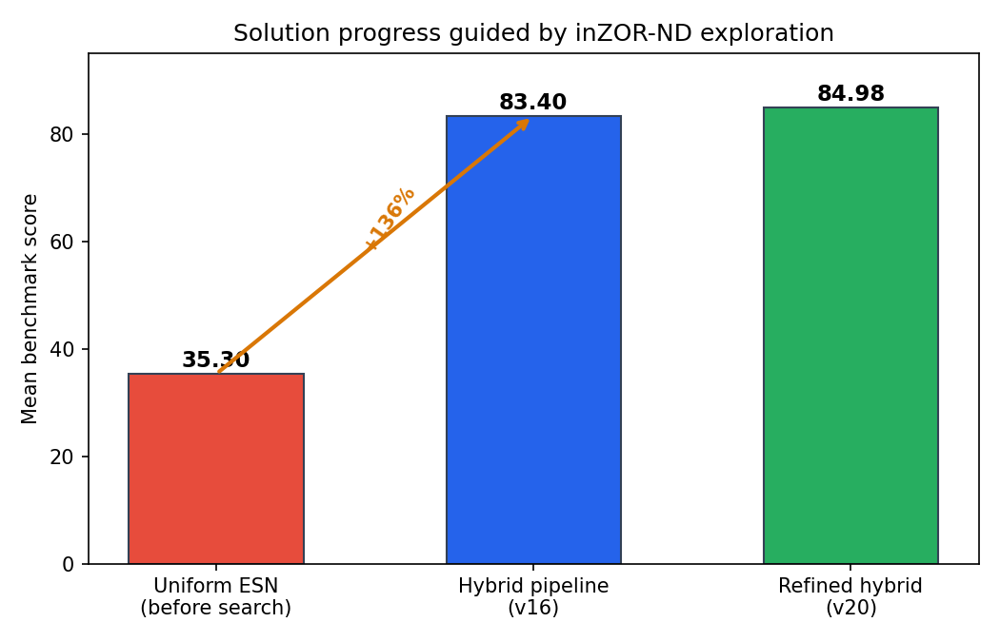
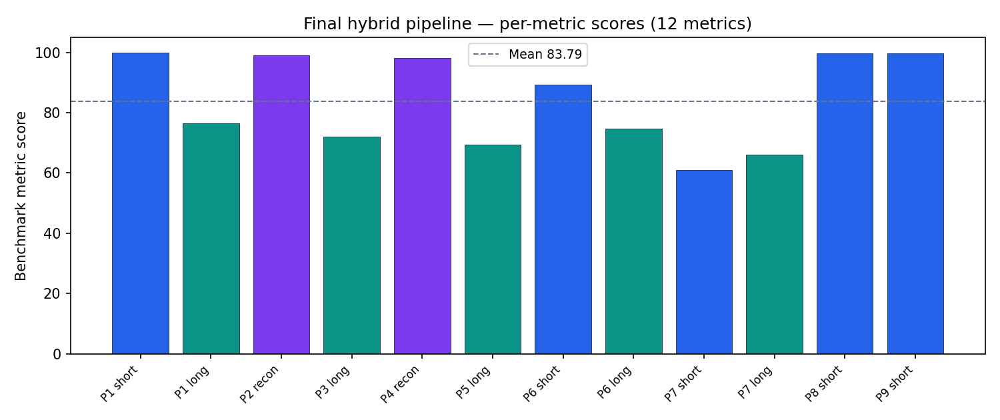

Forecasting chaotic attractors is not a single-algorithm problem. The Lorenz benchmark combines nine trajectory pairs with heterogeneous data regimes — abundant clean trajectories, noise-corrupted reconstructions, and few-shot windows of only 100 points — evaluated across twelve distinct metrics (short-horizon prediction, long-horizon distributional matching, and state reconstruction). A uniform Echo State Network achieves a mean score of only 35. We used inZOR-ND, an offline evolutionary exploration system, to search the hyperparameter landscape and to stress-test where reservoir computing succeeds or fails. The search did not merely tune one model: it revealed that no single method can cover all pairs, that naive development-set tuning actively harms generalisation, and that certain windows are structurally unforecastable. Guided by these findings, we built a fixed hybrid pipeline routing each pair to a physics- or statistics-motivated strategy. The final solution scores 84.98 mean on hold-out evaluation — a +141% improvement — demonstrating that systems like inZOR-ND can accelerate solution discovery in scientific machine learning without running at inference time.
The Lorenz system is a three-dimensional chaotic ODE — a standard testbed for nonlinear forecasting. Yet the benchmark is deliberately heterogeneous: each of the nine train/test pairs poses a structurally different challenge. Some pairs offer 10,000 clean training points; others provide only 100 noisy samples with no usable initial condition. Metrics range from short-horizon L2 prediction (first 20 steps) to long-horizon invariant-measure matching (last 500 steps) and full-trajectory reconstruction from noise.
| Regime | Pairs | Training size | Challenge |
|---|---|---|---|
| Clean, abundant | P1, P8, P9 | 10k – 30k | Short-horizon chaos; ODE continuation |
| Noisy, abundant | P2–P5 | 10,000 | Reconstruction + long-horizon statistics |
| Clean, few-shot | P6 | 100 | Limited data; sensitive to any change |
| Noisy, few-shot | P7 | 100 | Structurally unforecastable short window |
Applying one Echo State Network uniformly across all pairs yields a mean score of 35.19 on the official hold-out evaluation (35.3 on the development proxy) — far below what the benchmark structure allows. The question is not which hyperparameters to pick, but which class of solution applies where.
We ran inZOR-ND to explore whether evolutionary search could lift the uniform ESN baseline. On self-validation fitness, the search improved the best configuration from 54.9 to 60.7 (+5.8 points). This confirmed that the ESN landscape contains better regions — but also exposed a deeper issue: configurations optimised on the labelled development trajectories often failed to transfer to hold-out trajectories drawn from different initial conditions.

The value of inZOR-ND here was not a single tuned model to deploy. It was structured pressure on the search space that forced us to ask why improvements on one pair destroyed performance on another, and why development-set gains sometimes reversed on hold-out data. Those questions led directly to the discoveries below.

The final pipeline is a metric-adaptive dispatcher: for each pair and metric, it selects one of seven strategy branches based on data volume, noise level, and metric type. No evolutionary search runs when producing predictions — the routing rules and methods were chosen through the exploration process above.

The final hybrid pipeline achieves a mean hold-out score of 84.98 across all twelve metrics. On a locally reproducible development proxy the mean is 83.79, with per-metric breakdown below.

| Pair | Metric | Score | Strategy | Train pts |
|---|---|---|---|---|
| P1 | short | 99.85 | ODE integration | 10,000 |
| P1 | long | 76.53 | Quantile invariant | 10,000 |
| P2 | reconstruction | 98.99 | EKS denoising | 10,000 |
| P3 | long | 72.00 | Quantile invariant | 10,000 |
| P4 | reconstruction | 98.21 | EKS denoising | 10,000 |
| P5 | long | 69.33 | Quantile invariant | 10,000 |
| P6 | short | 89.23 | ESN few-shot | 100 |
| P6 | long | 74.67 | Densify-quantile | 100 |
| P7 | short | 60.94 | Distributional prior | 100 |
| P7 | long | 66.13 | Borrow-clean invariant | 100 |
| P8 | short | 99.78 | ODE integration | 30,000 |
| P9 | short | 99.78 | ODE integration | 30,000 |
| Mean (12 metrics) | 83.79 | Hold-out mean: 84.98 | ||
In the Lorenz case, inZOR-ND contributed in four concrete ways:
The deployed pipeline contains no evolutionary loop, no population, and no runtime search. It is a compact set of routing rules and deterministic methods — exactly the kind of transferable scientific solution that exploratory systems are meant to help find.
Chaotic dynamics benchmarks are structured to punish one-size-fits-all approaches. Starting from a uniform ESN scoring 35.19, we used inZOR-ND to explore where machine learning helps and where physics and statistics must take over. The result is a hybrid pipeline scoring 84.98 — with reconstruction near 99, short-horizon physics near 99.8, and a principled distributional answer for the hardest few-shot case. This case study supports the thesis that offline evolutionary exploration can guide solution discovery in complex scientific domains, provided its output is interpreted as insight rather than deployed verbatim.